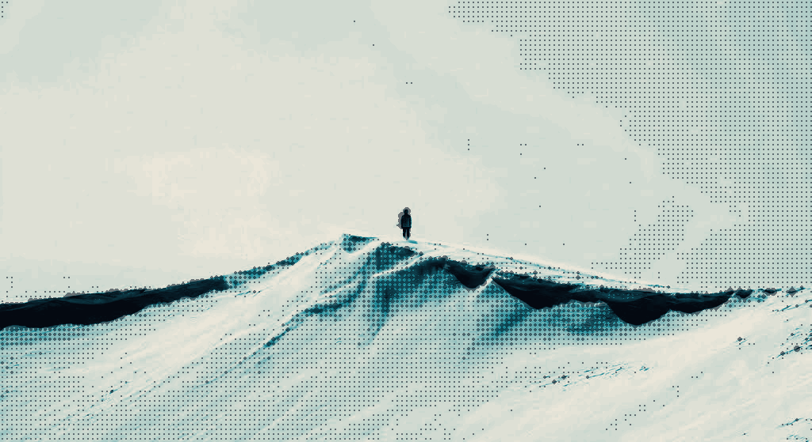
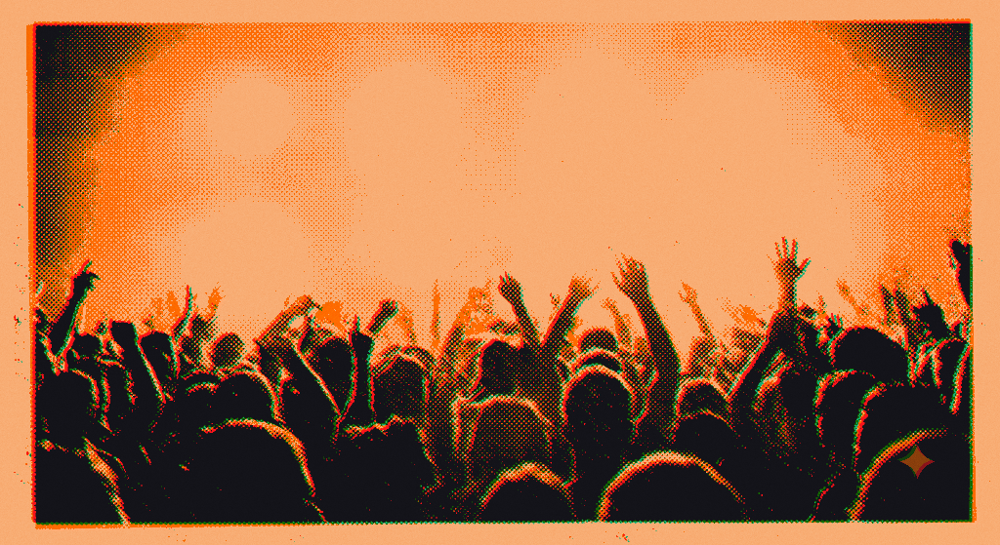

Eight voices, each with its own step sequencer.
Any voice plays any instrument on any step.
Any voice.
Any instrument.
Any step.
One pattern holds all eight voices. No track is locked to a single sound.
Free-form.
Any instrument, on any of 64 steps.
Multitimbral.
8 voices, 8 step sequencers.
Processed.
11 inserts, 4 sends, any order.
Automated.
3 modulation layers, any parameter.
Performance
Program it. Generate it.
Play it live.
Ways in
Four doors.
One machine.
Different people open a groovebox for different reasons. None of these is the beginner one. The screen below does not change — only where you are looking.
Begin with a beat
Tap steps until it moves. The Drum Synth is x0x-style — hats, snares and heavy kicks, synthesised rather than chosen from a folder.
Sixteen steps on screen. Up to sixty-four when the idea needs the room.
Sample what’s nearby
Record through the mic, or load an mp3 or a wav. The Sampler plays pitched or sliced, with old-skool repitching rather than time-stretching.
Play something melodic
The Classic Synth is wavetable, with four modes — spread, 2-op FM, paraphony, and in-scale chords. The Macro Synth carries sixteen sub-synths built on the architecture of a classic Eurorack module.
Let it generate
Generative is one of three ways a step arrives — alongside programming it by hand and playing it in over MIDI. All three write to the same lane.

Placeholder imagerySpecification
It is a groovebox.
Jolt Groovebox / iOSSequencer
SEQOne per voice, independent.
Any voice plays any instrument on any step. Multiple instruments mix into a single pattern.
Programmed · MIDI input · generative.
Patterns chain into songs, with automation.
Live parameter control while the song runs.
Instruments & Effects
INS · FX4 modes — spread, 2-op FM, paraphony, in-scale chords.
Built on the architecture of a classic Eurorack module.
Old-skool repitching, per-step reversing, mic recording, mp3 and wav loading.
Hats, snares, heavy kicks.
04 4-stage ladder, or resonant SVF (LP / HP / BP), with mod envelope. 10 16-step, synced.
Modulation
MOD · SENDSine, ramp, random. Freely assignable.
Bar-to-bar, or real-time fader override.
Synced, with feedback.
Platform
SYSiPhone portrait. iPad landscape.
Editor clusters on one surface, three note lanes instead of one, all four composer segments visible. More controls resident, less menu-diving.

Demo
It already runs
in this browser.
A slice of the engine — the real DSP, compiled to WebAssembly, behind a simple sequencer. It is not the app.
Play the demo